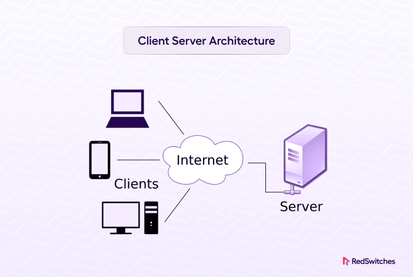

1. Course Introduction üöÄ
|
Welcome to MaterialFlow's Web Development Course, designed
to take you from beginner to advanced, covering the
MERN stack (MongoDB, Express.js, React,
Node.js), Spring Boot, system design, and AI basics. Led by Rohit
Negi, an IIT Guwahati alumnus with experience at Uber,
this course equips you with practical skills to build
scalable projects and become placement-ready for
freelancing, startups, or corporate tech roles.
Course Objectives: - Master the fundamentals of how the internet works. - Learn to build full-stack web applications. - Understand client-server architecture and networking. - Prepare for real-world development challenges. Instructor: Rohit Negi (B.Tech, Master's from IIT Guwahati, ex-Uber engineer, YouTube educator for 2.5+ years). Expectations: - Consistency: Follow daily video releases (Monday–Friday). - Complete all tasks and share progress on LinkedIn/X for accountability. Real-World Outcome: Build and deploy a portfolio-ready website. Progress: 23% (Day 1 of 06) |
2. How the Internet Works üåê

|

|
|
The internet is a global network of interconnected
computers that enables communication and data transfer.
Understanding its core principles is essential for web
development.
Principle 1: Sharing Information To share data between two computers (e.g., Computer A to Computer B), a direct connection is needed. Initially, physical transfer (e.g., USB) was used, but electronic connections like ethernet or fiber optic cables allow faster data transfer using binary signals (1s and 0s).
<!-- Example: Basic data transfer concept -->
Computer A --[Ethernet Cable]--> Computer B
Signal: High voltage = 1, Low voltage = 0
Principle 2: Scaling ConnectionsConnecting multiple computers directly requires too many cables. A switch acts as a central hub, creating a Local Area Network (LAN) for efficient communication within a small area (e.g., office, home).
<!-- LAN Example -->
Computer A --> Switch <-- Computer B
Computer C --> Switch <-- Computer D
Principle 3: Connecting NetworksTo connect multiple LANs, a router links networks, forming the internet—a network of networks. Routers pass data between networks, enabling global communication.
<!-- Internet Example -->
LAN 1 (Switch) --> Router --> LAN 2 (Switch)
Principle 4: AddressingEach device needs a unique IP address (e.g., 142.250.184.142) to send and receive data. Routers use IP addresses to route data to the correct destination. Principle 5: Reliability with Packets Data is broken into small packets for efficient and reliable transfer. Each packet includes: - Payload (data chunk) - Sender and receiver IP addresses - Packet number for reassembly The TCP/IP protocol ensures packets are sent, received, and reassembled correctly.
<!-- Packet Structure Example -->
Packet: [Sender IP: 192.168.1.2 | Receiver IP: 142.250.184.142 | Packet 1/100 | Data: "Hello"]
Real-World Analogy: Sending a book via mail by
tearing it into pages, numbering them, and mailing each
page separately. The receiver reassembles the pages in
order.
"The internet is not a single cloud—it's millions of local networks connected by routers, enabling global communication." — Rohit Negi |
3. IP Addresses üìç

|
|
An IP address is a unique identifier for
devices on a network, enabling precise data routing.
IPv4: - 32-bit address, formatted as four decimal numbers (0–255) separated by dots (e.g., 172.217.16.142).- Total addresses: ~4.3 billion (2³²). - Limitation: Insufficient for the growing number of devices (e.g., phones, IoT devices). IPv6: - 128-bit address, using hexadecimal (e.g., 2001:0db8:85a3:0000:0000:8a2e:0370:7334).- Total addresses: ~340 undecillion (2¹²⁸), future-proofing the internet. Public vs. Private IPs: - Public IP: Globally unique, assigned by ISPs (e.g., 122.162.144.84).- Private IP: Unique within a local network (e.g., 192.168.1.8), reusable across networks.- Reserved private ranges: 10.0.0.0–10.255.255.255,
172.16.0.0–172.31.255.255,
192.168.0.0–192.168.255.255.NAT (Network Address Translation): Routers translate private IPs to public IPs for internet access, conserving public IP addresses.
Real-World Example: When you visit whatismyipaddress.com, it shows your router’s
public IP. Your device’s private IP is visible in Wi-Fi
settings.
|
4. MAC Addresses üîó
|
A MAC (Media Access Control) address is a
permanent, unique identifier for a device’s network
interface, assigned during manufacturing.
Format: 48-bit, displayed as 12 hexadecimal digits (e.g., 3C:22:FB:A3:B4:C5).Multiple MACs: A device can have multiple MAC addresses (e.g., one for Wi-Fi, one for Ethernet, one for Bluetooth). Purpose: Ensures accurate data delivery within a LAN, especially when IP addresses change dynamically. Security Role: Including MAC addresses in packets prevents data misdirection if an IP is reassigned.
<!-- MAC Address Example -->
Request Packet: [IP: 192.168.1.2 | MAC: 3C:22:FB:A3:B4:C5 | Data: "Hi"]
How to Find MAC Address:- Windows: Run ipconfig /all or
getmac /v in Command Prompt.- macOS: Run ifconfig in Terminal.Real-World Example: AirDrop uses MAC addresses for direct device-to-device data transfer without internet. |
5. Port Numbers üî¢
|
Port numbers (0–65535) identify specific
applications or services on a device, ensuring data
reaches the correct program.
Categories: - Well-Known Ports (0–1023): Reserved for standard services (e.g., HTTP: 80, HTTPS: 443). - Registered Ports (1024–49151): Used by specific applications (e.g., MongoDB: 27017, React dev server: 3000). - Dynamic Ports (49152–65535): Temporary ports for client-side requests. Purpose: Directs data to the correct application (e.g., Instagram tab vs. YouTube tab).
<!-- Request with Port Example -->
Request: [IP: 192.168.1.2 | MAC: 3C:22:FB:A3:B4:C5 | Port: 5132 | Data: "Instagram Reel"]
Real-World Example: When browsing, your browser
assigns a dynamic port (e.g., 5132) to an Instagram tab to
fetch a reel, ensuring the response returns to the correct
tab.
|
6. Domain Name System (DNS) üîç
The Domain Name System (DNS) translates
human-readable domain names (e.g.,
google.com) into IP addresses.
DNS Resolution Process: 1. Browser checks its cache. 2. If not found, queries the OS cache, then router cache. 3. If still unresolved, queries a Recursive DNS Resolver (e.g., ISP’s server or Google’s 8.8.8.8). 4. Resolver queries Root Servers to find the TLD server (e.g., .com).5. TLD server directs to the Authoritative Name Server for the domain. 6. Authoritative server provides the IP address. 7. Resolver caches the result (TTL-based) and returns it to the browser.
<!-- DNS Query Example -->
Browser: "What is the IP for google.com?"
Resolver → Root Server → .com TLD Server → Google’s Name Server
Response: 142.250.72.206
Real-World Example: Typing
coderarmy.in triggers a DNS query to fetch
its IP, enabling your browser to connect to the server.
|
7. HTTP vs. HTTPS üîí
|
HTTP (HyperText Transfer Protocol) and
HTTPS (HTTP Secure) govern how data is
transferred between clients and servers.
HTTP: - Unencrypted, data is sent in plain text. - Vulnerable to interception (e.g., hackers reading messages). - Browsers may show a “Not Secure” warning. HTTPS: - Encrypted using SSL/TLS, ensuring data privacy. - Converts messages (e.g., “Hi”) to unreadable form (e.g., access) during transit.- Essential for secure websites (e.g., banking, e-commerce).
Real-World Example: HTTPS ensures your login credentials are encrypted when accessing gmail.com.
|
8. Client-Server Architecture üñ•Ô∏è
|
Web development revolves around the
client-server architecture, where clients
request data and servers respond.
Client: A device or program (e.g., browser) that sends requests. Server: A device or program that processes requests and sends responses (e.g., coderarmy.in server).Process: 1. Client sends a request (e.g., for google.com).2. DNS resolves the domain to an IP address. 3. Server returns files: HTML (structure), CSS (styling), JavaScript (interactivity). 4. Browser renders the files to display the website.
<!-- Client-Server Example -->
Client (Browser) → Request: "GET google.com" → Server
Server → Response: [HTML, CSS, JavaScript]
Real-World Example: Clicking a YouTube video sends
a request to YouTube’s server, which responds with the
video page’s files.
|

9. MERN Stack and Full-Stack Development üõ†Ô∏è

|
|
The MERN stack is a popular framework for
building full-stack web applications, covering front-end,
back-end, and database components.
MERN Components: - MongoDB: NoSQL database for storing data. - Express.js: Backend framework for Node.js, handling server-side logic. - React: JavaScript library for building dynamic user interfaces. - Node.js: Runtime environment for running JavaScript on the server. Full-Stack Development: - Front-End: User interface (HTML, CSS, React). - Back-End: Server logic, authentication (Node.js, Express, or Spring Boot). - Database: Data storage (MongoDB, MySQL). Alternative: Spring Boot (Java-based) for backend development.
Real-World Example: A social media app like Instagram uses React for the UI, Express/Node.js for handling posts, and MongoDB for storing user data. |
11. Assignment: Explore Networking Basics üìù
|
Task: Create a simple HTML page summarizing the
internet’s core principles and networking concepts. Requirements: - Use <table> to present IP address
types (Public vs. Private).- Include a code snippet showing a YouTube thumbnail embed. - Write a paragraph explaining DNS resolution. - Share your page on LinkedIn/X with #MaterialFlow. Bonus: Find your device’s MAC address using Command Prompt or Terminal. |
12. Conclusion and Next Steps üîÆ
|
Day 1 lays the foundation for web development by
demystifying how the internet works, from IP addresses and
DNS to client-server architecture and the MERN stack.
You’re now equipped to start coding with HTML in Day 2!
Next Steps: - Complete the assignment and share progress. - Review HTML basics for Day 2. - Explore DNS tools like nslookup.Stay Consistent: Follow daily lectures and engage with the community on LinkedIn/X. |